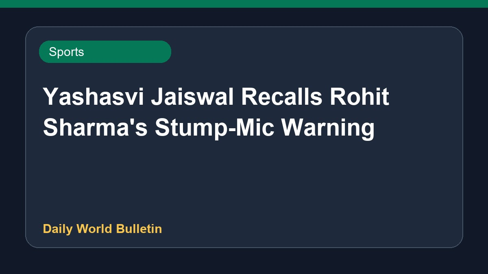
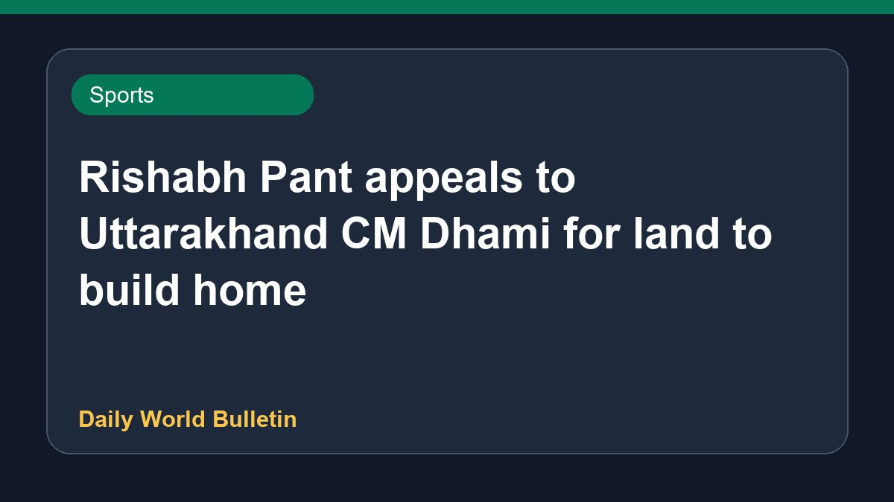

Yashasvi Jaiswal Recalls Rohit Sharma's Stump-Mic Warning

Ahead of the Test series against Sri Lanka, Indian cricketer Yashasvi Jaiswal shared a humorous social media post recalling a lighthearted reprimand from captain Rohit Sharma. Jaiswal referenced a viral stump-mic moment where Rohit instructed him to stay seated with the phrase 'Neeche baith ke rah'. The young opener's lighthearted nod to the incident highlights the strong camaraderie within the national team squad as they prepare for the upcoming red-ball fixtures.
Original source: Sports News Sources
'Neeche baith ke rah': Yashasvi Jaiswal recalls Rohit Sharma's stump-mic scolding in Instagram post - timesofindia.indiatimes.com ↗
'Neeche baith ke rah': Yashasvi Jaiswal recalls Rohit Sharma's stump-mic scolding in Instagram post - timesofindia.indiatimes.com ↗
Related News
Ashish Yadav Wins Javelin Silver at World U20 Championships

SportsRishabh Pant appeals to Uttarakhand CM Dhami for land to build home
Shaik Rasheed and Sarfaraz Khan emerge as top Test squad contenders
 Sports
Sports